Rebuilding a vaccine scheduler so people never lose their place.
EasyVax helps people find a pharmacy and book a vaccine appointment. I helped design the first version in 2023. In 2025 I came back to lead a redesign and reskin of earlier work. It shipped in early 2026 on web, iOS and iPadOS.
Version 1 worked, but each step was its own page. You didn't know where you were in the process or how many steps remained. Once you moved on, your earlier choices disappeared, and the only way to fix something was the Back button. On top of that, every pharmacy connected differently. Some supported full online booking, and some offered only a phone number.
Discovery and early design on v1. On the redesign, I led the flow structure, interaction model and cross-platform design. I also worked on the visual reskin with a partner agency.
The redesign shipped in early 2026. The reskin you see here launched in August 2026, after my time on the project ended.
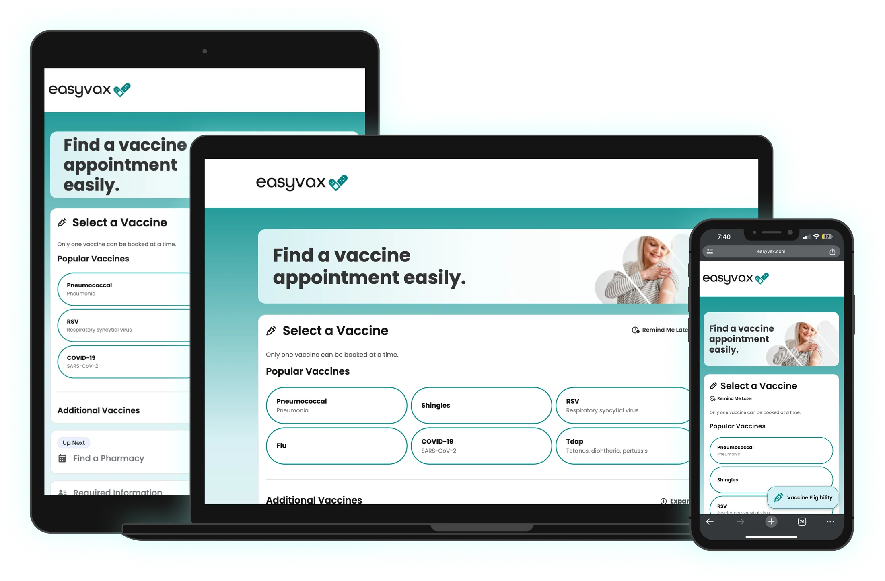
2023 vs. 2026
Same four steps, same job. The difference is that earlier choices stay on the screen.
Finding a pharmacy
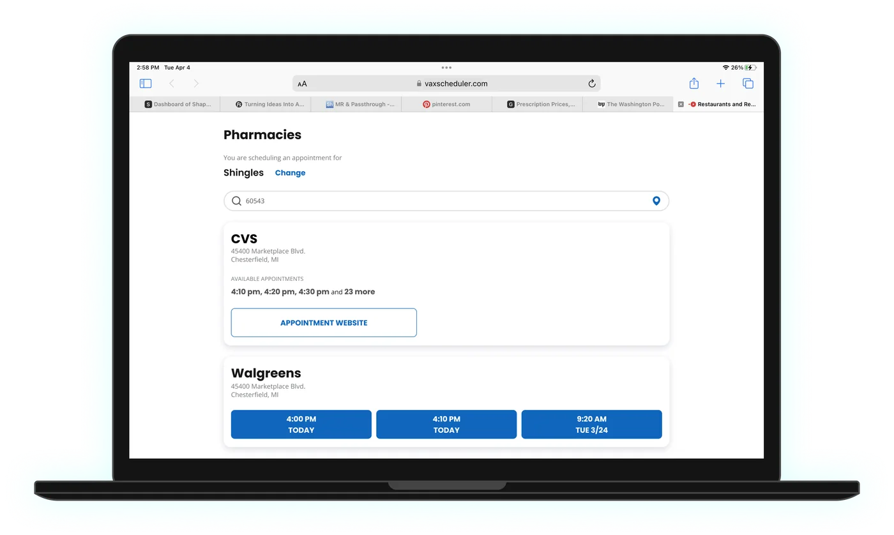
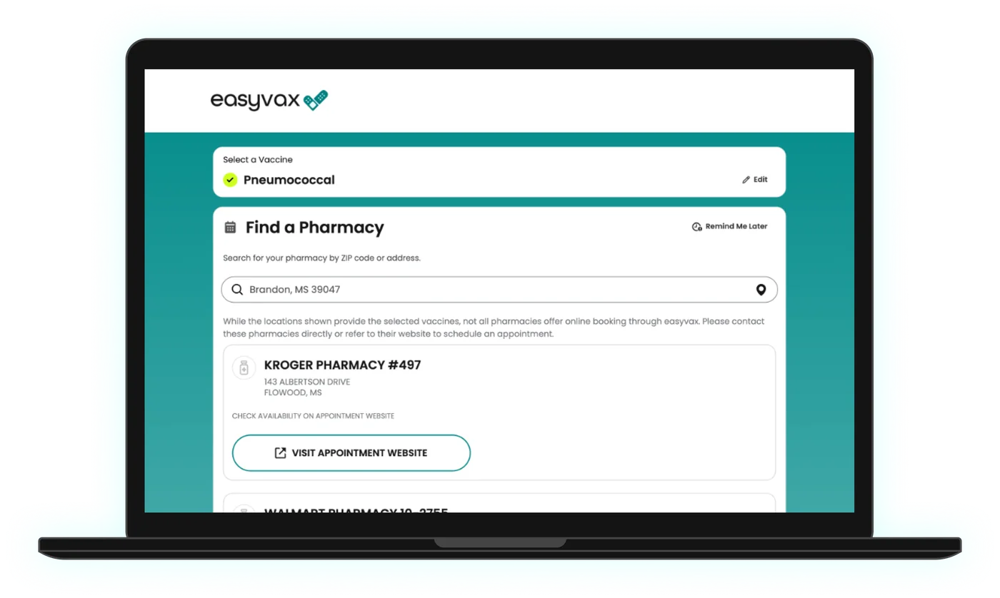
Entering your information
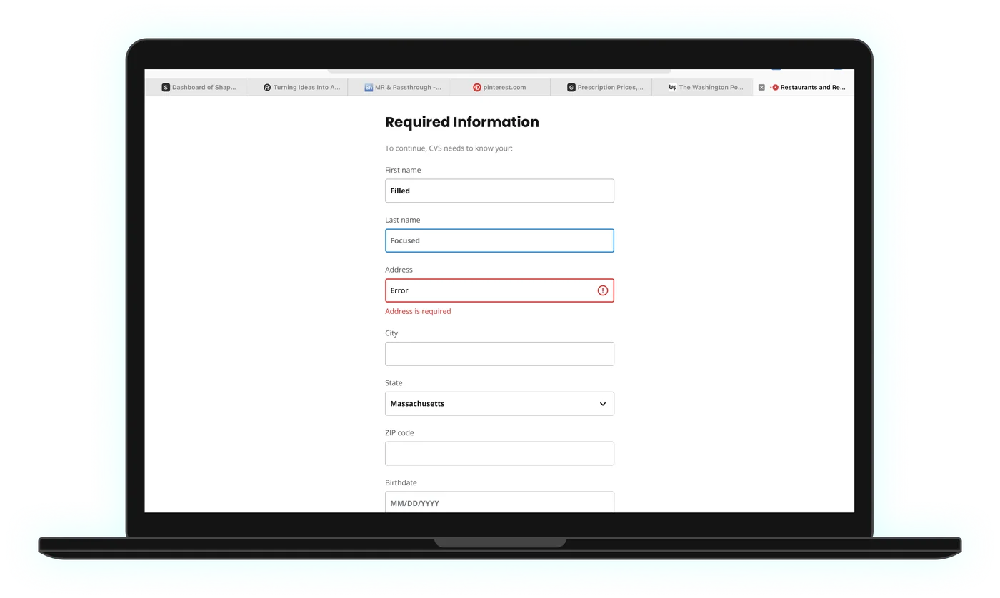
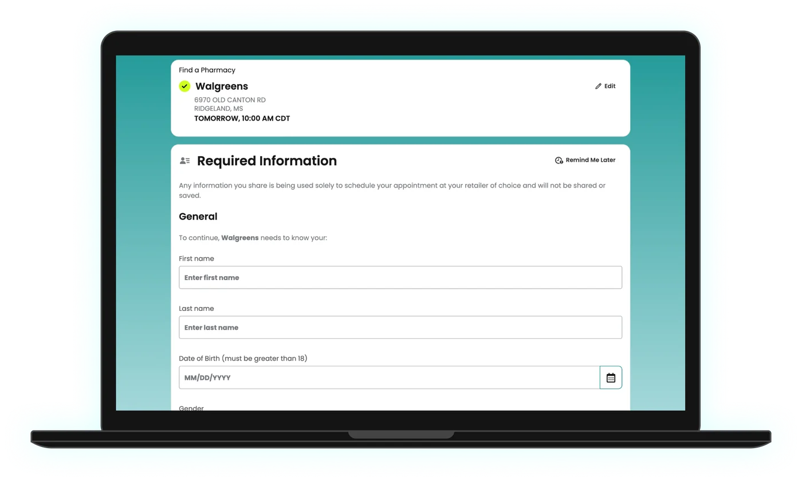
Reviewing the appointment
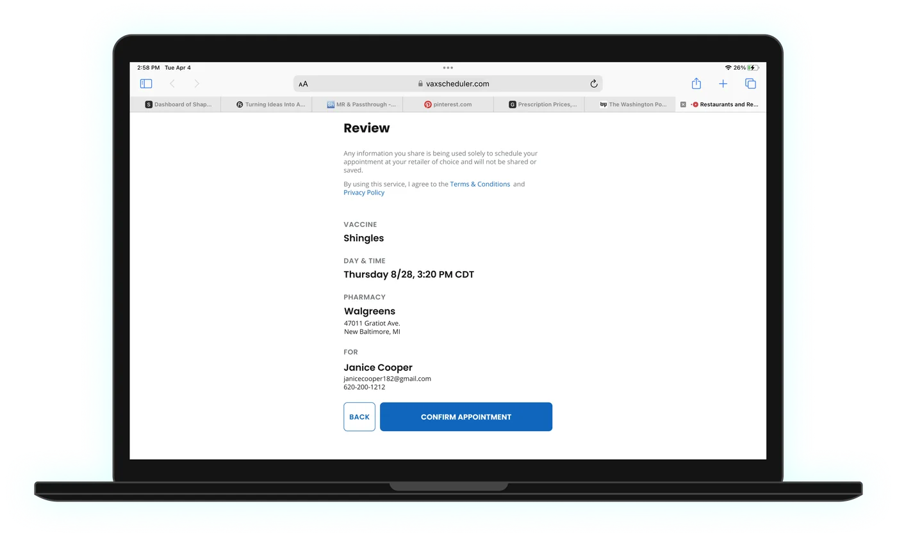
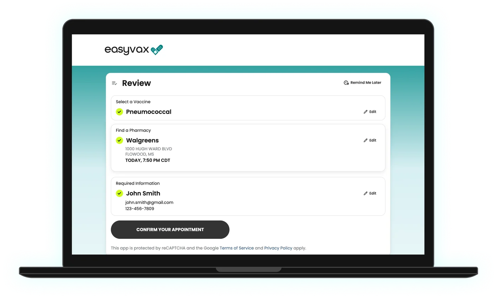
Designing for five levels of pharmacy integration
Pharmacies connect to EasyVax in very different ways. Some allow full booking, and some share only a phone number. We designed one pharmacy card with a variant for each level, so every result has a clear next step and people aren’t sent off without explanation.
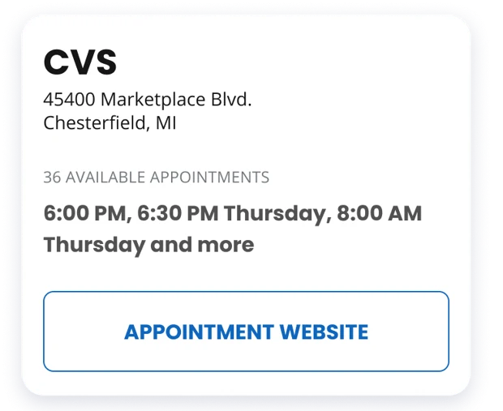
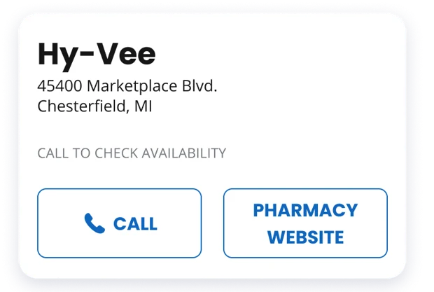
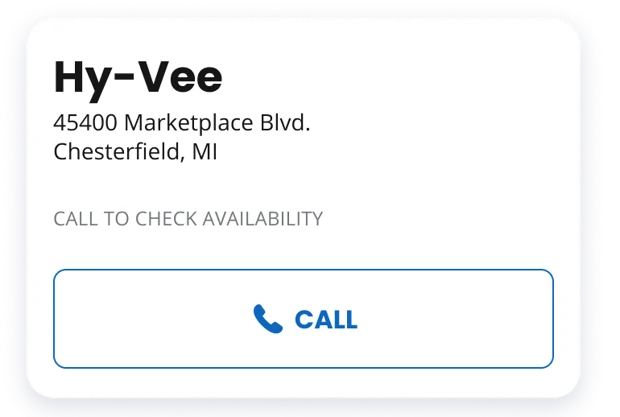
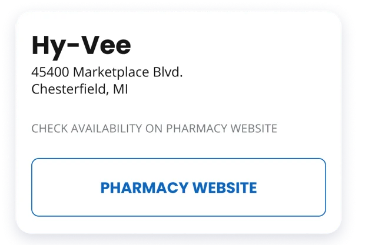
The flow on mobile
Four steps. One is open at a time, finished steps collapse into summaries, and the next step is labeled “Up next.”
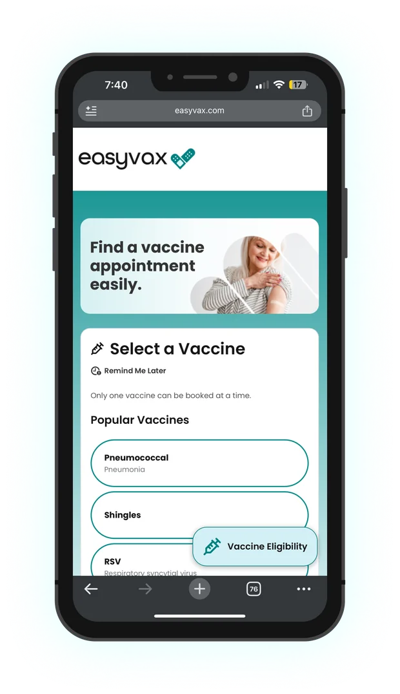
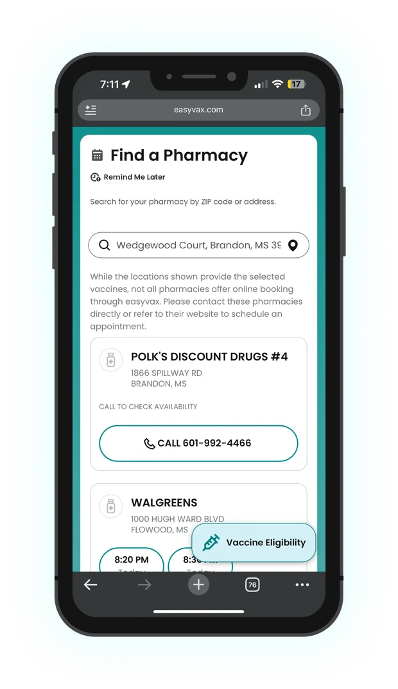
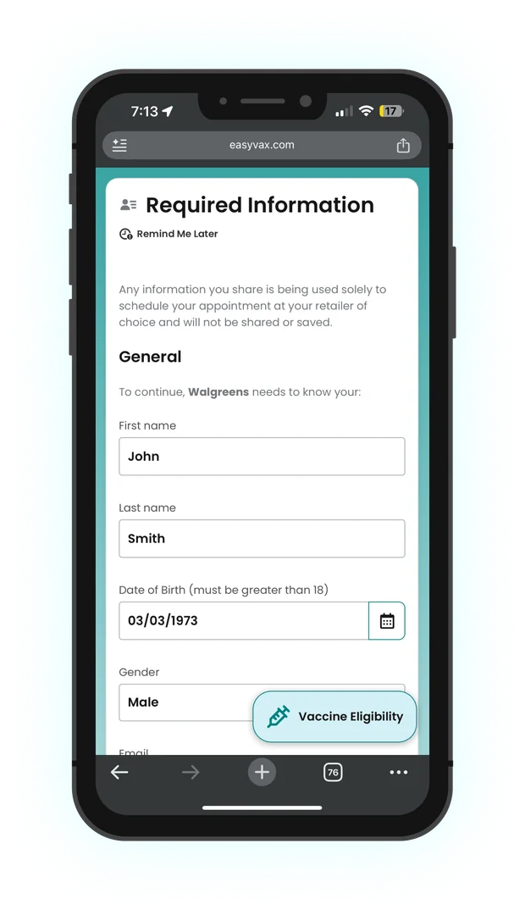
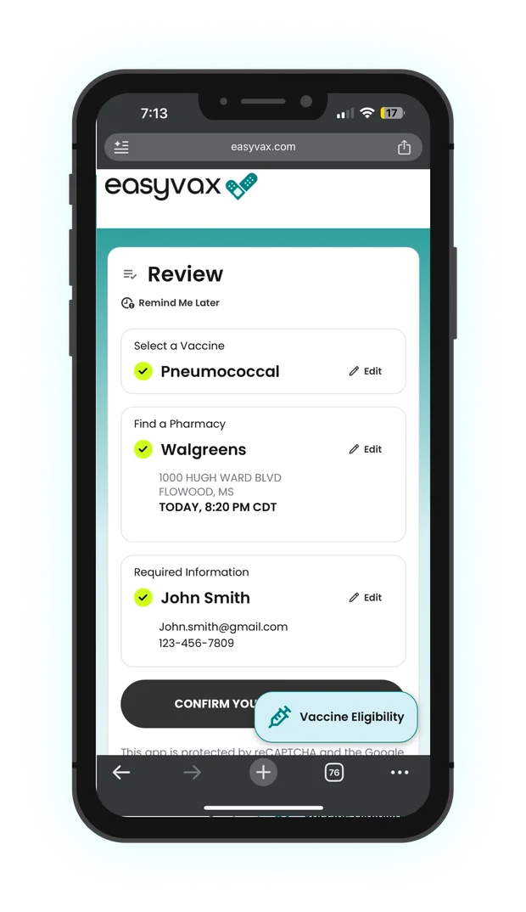
One flow, several platforms
One interaction model, adapted to each device, including dark mode in the iOS app. I also designed the Android version.
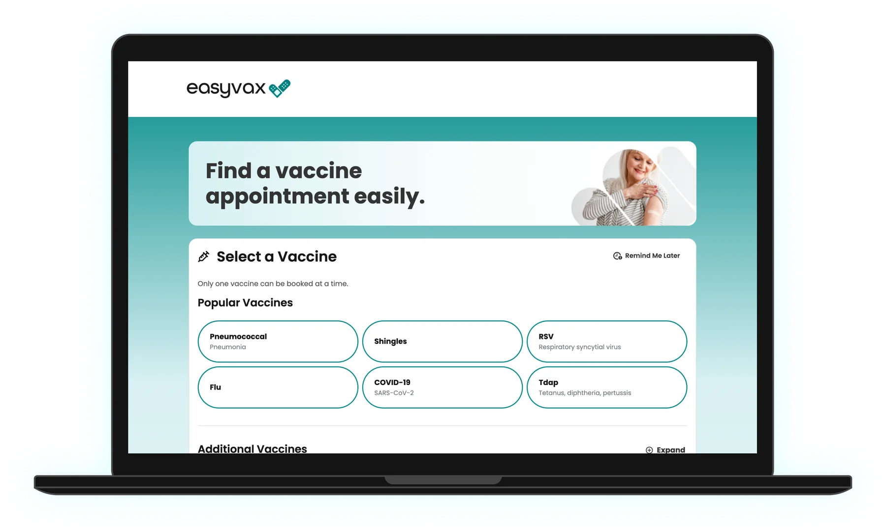
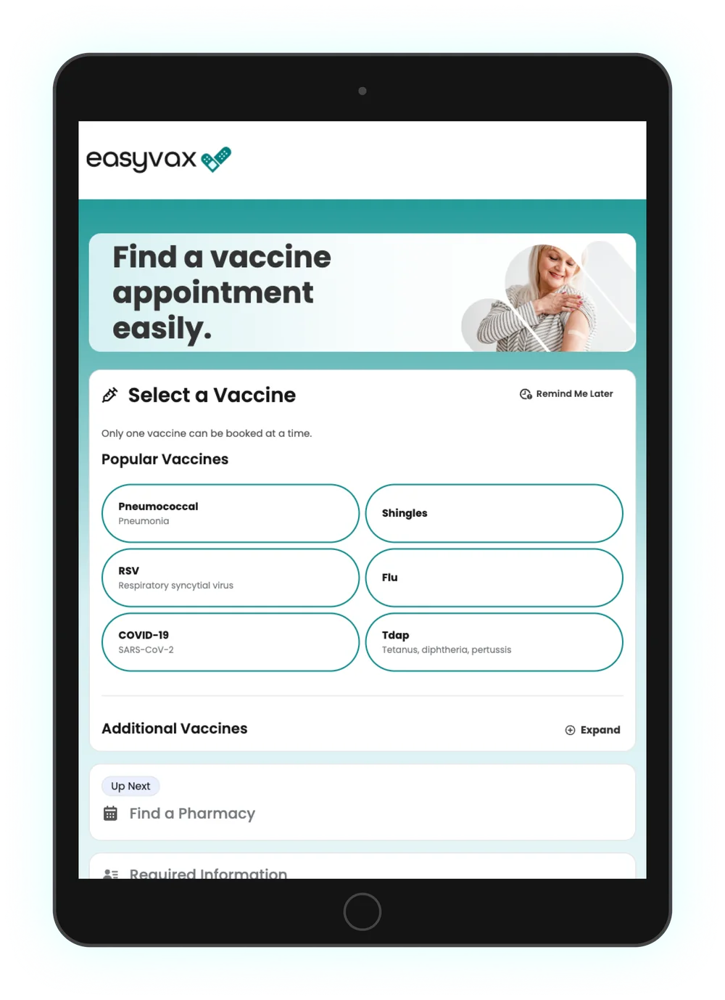
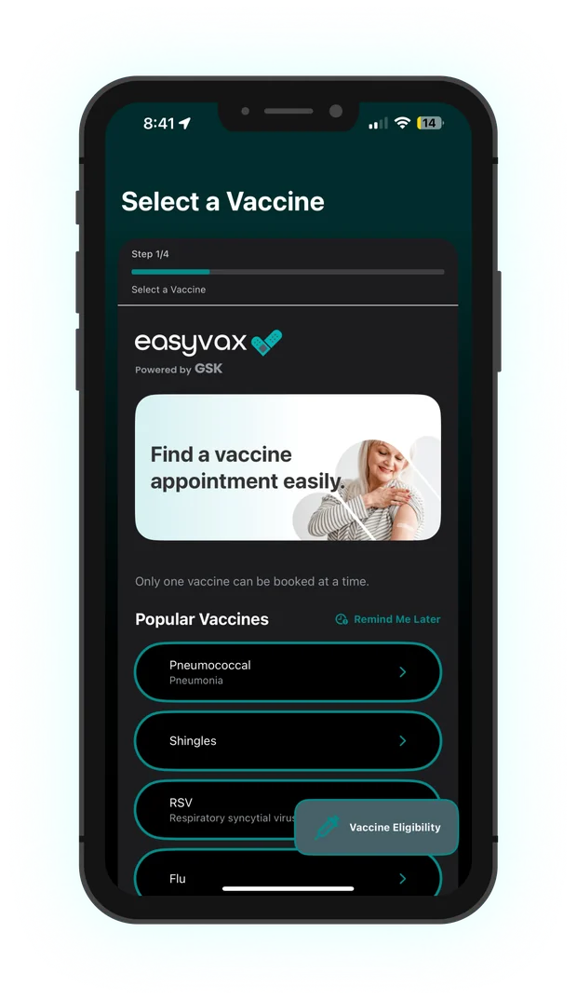
Decisions that mattered
Keep the whole booking on one page
Instead of four separate pages, the steps stack as an accordion. Finished steps collapse into a one-line summary, the current step is open, and the next one is labeled “Up next.” People can always see what they’ve chosen and what’s left.
Edit in place instead of going back
In v1, fixing a mistake meant the Back button, sometimes more than once. Now every completed step has its own Edit link, so changing the pharmacy doesn’t mean starting over.
Ask only what the pharmacy needs, and explain why first
Each pharmacy requires different details, so the form is built from that pharmacy’s requirements and says so by name: “To continue, Walgreens needs to know your…” The note on how information is used moved from the review screen to the top of this step, so people read it before they type anything.
No dead ends at the pharmacy step
Not every pharmacy supports online booking. Rather than hiding those locations, each card shows whatever that pharmacy can offer, whether that’s bookable times, a booking link, a phone number or a website. It also says plainly what the next step is (see the integration levels above).
What changed, and what I’d expect
I left before post-launch numbers were available. Here’s what I can point to directly, and what the design was meant to improve.
Pharmacy card variants covering five integration levels, so no pharmacy is a dead end.
Back-button trips needed to change an earlier choice. Every step can be edited in place.
Keeping earlier choices on screen and explaining data use before the form are where I’d expect the biggest change in completed bookings.
Completion rate by step, time from first tap to confirmation, and how often people edit a previous step, each compared with v1.
Have a complex flow that's losing people? Let's fix it.
I love talking about design and hard problems. Drop me a line or connect on LinkedIn. I'd love to hear from you.